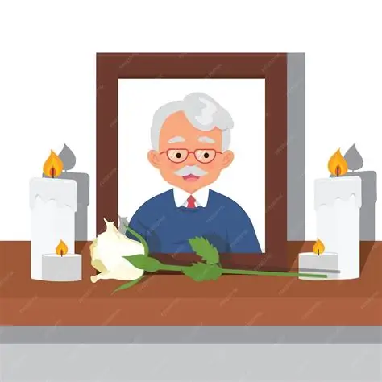

Siempre en nuestro corazón
Tu recuerdo ilumina nuestra ofrenda.
TRADICIÓN • MEMORIA • AMOR
Un recuerdo que vive en el corazón

Tu recuerdo ilumina nuestra ofrenda.
Pulsa el botón para escuchar la música.
NUESTRAS TRADICIONES
se cree que su color intenso y su aroma ayuda a guiar a las almas del difunto hacia a la ofrenda .
Representan la luz y la esperanza, representa la claridad que ilumina el camino de las almas para que encuentre su ofrenda.
Es un elemento tradicional de la ofrenda se coloca para que las almas, despues de su largo viaje desde el mas alla puedan refrescarse y recuperar fuerzas.
Forma parte de esta celebración mexicana que representa la union y el compartir entre vivos y muertos pues el pan es alimento basico que se ofrece con cariño.
Recordar también es una forma de amar.